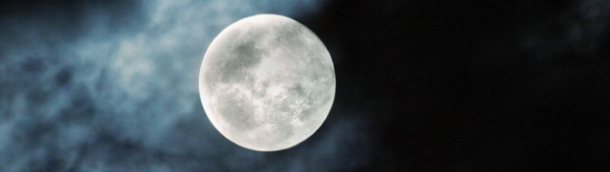
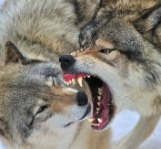
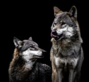
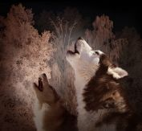

Warewolves
The lore of werewolves has captivated human imagination for centuries, transcending geographical boundaries and cultural divides. These mythical creatures, often associated with the full moon and the transformation from human to wolf, have left an indelible mark on folklore, literature, and popular culture.
Origins & Culture
The origins of the werewolf myth can be traced back to ancient civilizations. The word "werewolf" itself is derived from Old English, with "were" meaning "man" and "wulf" meaning "wolf." The idea of shape-shifting humans who could transform into wolves or other animals was not limited to a single culture but appeared independently in various societies.
One of the earliest recorded instances of the werewolf myth can be found in Greek mythology. The story of Lycaon, a king who was transformed into a wolf as punishment for his cruelty, is a prime example. Additionally, the Greeks believed in the concept of "lycanthropy," wherein individuals were thought to have the power to turn into wolves. This term would later become synonymous with the condition of being a werewolf.
The werewolf myth has deep cultural significance across different societies. In many cases, it serves as a cautionary tale or a reflection of societal fears and anxieties. For instance, in medieval Europe, werewolves were often associated with witchcraft and the Devil. The belief in werewolves played a crucial role in the witch hunts and trials of the time, as those accused of being werewolves were often subjected to the same persecution as witches.
In other cultures, werewolves were seen as protectors of nature or guardians of sacred places. In Native American folklore, the "skinwalker" could assume the form of various animals, including wolves, and was often associated with malevolent powers. In contrast, some Indigenous cultures revered the wolf and believed in the spiritual connection between humans and these majestic creatures.
Common Traits
Warewolves can vary immensely, but there exist a few traits that are more commonly associated with werewolves.
One of the defining characteristics of werewolves is their ability to transform from a human form into a wolf or a hybrid form that combines human and wolf features. This transformation is typically triggered by the full moon or, in some cases, by the will of the werewolf.
In many depictions, werewolves are closely associated with the full moon. It is during this lunar phase that their transformation is most likely to occur, and their wolf-like instincts become more pronounced.
While in their wolf or hybrid form, werewolves are often depicted as having heightened physical strength, speed, agility, and senses. They may possess razor-sharp claws and teeth, making them formidable predators.
Werewolves are frequently portrayed as having an uncontrollable bloodlust while in their wolf form. They are driven by a primal urge to hunt and kill, often for the taste of human flesh or blood.
A common weakness of werewolves in many traditions is their vulnerability to silver. Silver bullets, blades, or objects are often the only means to harm or kill a werewolf.
In many depictions, the transformation into a werewolf is involuntary, and the individual has little to no control over when it occurs. This involuntary aspect adds to the tragic nature of the werewolf curse.
The origin of a person becoming a werewolf can vary. It is often portrayed as the result of a curse, a hereditary condition, or an infection from a werewolf bite or scratch.
The duality of the human and wolf nature is a central theme in many werewolf stories. Werewolves often struggle with their dual identity, battling to control their wolf instincts and retain their humanity. This struggle can often be seen through the werewolf exhibiting extreme emotions, in most cases being anger.
Warewolves in Media
The werewolf myth has evolved over time, adapting to the changing cultural landscape. One of the most influential literary works that contributed to the popularization of werewolves is "The Werewolf" by Clemence Housman, published in 1896. This novella introduced the idea of the curse of lycanthropy, where individuals are involuntarily transformed into wolves during the full moon.
The 20th century witnessed a surge in werewolf-themed literature and films, with iconic characters like Lon Chaney Jr.'s Wolf Man in Universal Pictures' classic horror films. In modern times, the "Twilight" series by Stephenie Meyer and the " Underworld" film franchise have added their own unique twists to the werewolf myth, further cementing its place in contemporary pop culture.
Hierarchy of Warewolves
The presence of a hierarchy among werewolves in mythology and storytelling creates dramatic conflict, driving the narrative by introducing power struggles, dominance contests, and survival challenges among pack members. This internal strife adds depth and intrigue to the story, keeping audiences engaged. The hierarchical structure can symbolically represent broader themes such as leadership, authority, and the balance of power within a group. By exploring these themes through the werewolf hierarchy, storytellers can offer commentary on human society and politics, making the narrative both thought-provoking and relatable.
Additionally, the presence of a hierarchy allows for the development of individual characters within the pack. Characters may aspire to rise in rank, challenge the alpha's authority, or navigate their roles within the group, leading to character growth and complexity. This dynamic character development contributes to the richness of the werewolves' personal stories. A well-defined hierarchy generates narrative tension within the story. Subordinate members may question the alpha's decisions, and those seeking to challenge the alpha may face internal and external obstacles, heightening the stakes and advancing the plot.
The hierarchical structure of werewolf packs can also serve as a reflection of social dynamics in the human world. It explores themes such as leadership, obedience, loyalty, and the consequences of challenging authority. By doing so, it engages readers or viewers on a deeper level, allowing them to relate the werewolf narrative to real-life social structures and relationships. Lastly, the concept of an alpha and pack hierarchy has become a traditional part of modern werewolf lore, drawing from established tropes in the genre. This tradition helps differentiate werewolves from other supernatural creatures and contributes to their distinct identity within the realm of supernatural fiction.
Alpha
In contemporary werewolf lore, a prevalent hierarchical structure often emerges, centered around the figure of the "Alpha." The Alpha werewolf stands as the apex predator within a pack, possessing unmatched strength, cunning, and often, the power to compel obedience from subordinates. The alpha's authority is absolute, and they function as the leader, guiding the pack's actions and decisions. Frequently, the status of alpha is not only determined by physical prowess but also by lineage or the ability to challenge and defeat the existing alpha in combat. This concept of the alpha wolf serves as a focal point in modern werewolf narratives, amplifying the struggle for power within the pack.
Beta
Beneath the alpha, there exists a tier of subordinate werewolves known as "Beta Wolves." These individuals, while still formidable in their own right, occupy a lower rank within the pack's hierarchy. They defer to the authority of the alpha, supporting and executing the leader's directives. The status of beta is more nuanced, fluctuating based on strength, loyalty, and, in some narratives, the favor of the alpha. This hierarchy within the pack often gives rise to tension and competition among the beta members as they vie for the potential opportunity to challenge the alpha.
Omega
At the lowest rung of the werewolf hierarchy, we find the "Omega Wolves." These individuals are typically the least dominant, often serving as the scapegoats or subjects of mistreatment within the pack. Their status is marked by vulnerability and submission, enduring the brunt of the pack's aggression. The hierarchical divide among werewolves can be particularly challenging for omega wolves, who must navigate a perilous existence on the fringe of their pack's social structure.
Lone Wolf
 A lone werewolf is a character in werewolf mythology who was once an alpha leader in a werewolf pack but lost in a challenge against another pack member, resulting in their removal from the pack. As a lone werewolf, they must survive on their own, facing numerous challenges such as securing food and shelter, protecting themselves from supernatural threats, and dealing with the emotional toll of isolation. With the absence of pack support and resources, it is rare that these werewolves survive.
A lone werewolf is a character in werewolf mythology who was once an alpha leader in a werewolf pack but lost in a challenge against another pack member, resulting in their removal from the pack. As a lone werewolf, they must survive on their own, facing numerous challenges such as securing food and shelter, protecting themselves from supernatural threats, and dealing with the emotional toll of isolation. With the absence of pack support and resources, it is rare that these werewolves survive.